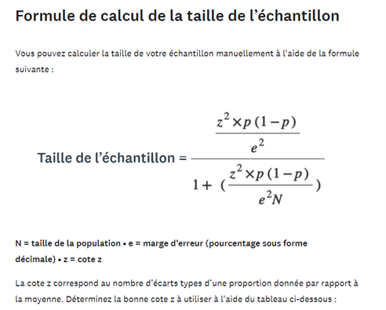

Échantillonnage
Méthode
Pour notre enquête nous avons donc choisit un échantillonnage par quotas. Nous avons fait ce choix puisque l’échantillonnage par quotas fait en général référence au processus par lequel un chercheur tente d'obtenir dans un échantillon la représentation exacte d'une population en fonction d'une certaine caractéristique démographique qui semble importante (ex: le sexe, l’âge, le revenu, les diverses modes de déplacements...)
Taille
Pour calculer la taille de notre échantillon, nous avions à notre disposition deux possibilités.
-
Utiliser le calculateur CheckMarket
-
Appliquer le calcul de SurveyMonkey

Premièrement, nous avons pris en compte que la population niçoise était d’environ 350.000 habitants. Par la suite, nous avons défini une marge d’erreur de 5% et un niveau de confiance de 95%.
Si l'on estime que le taux de réponse sera d'environ 25%, on obtient un nombre d'invitations de 4256. Il est donc nécessaire que 1064 individus répondent à notre enquête.
Coût
Si l’on met en place un sondage rémunéré de l’ordre d’un maximum de 5€, cela permettra un effet boule de neige. On l’accompagne de pub ciblant la population niçoise spécifiquement par le biais de Facebook.
En règle générale, on compte entre 0,30€ et 1€ d’investissement pour 1 retour sur Facebook.
On obtient pour l’enquête un coût de 9000€. (5000€ pour le sondage + 4000€ de publicité Facebook)
Enquête n°1 (Particuliers)
Élaboration
Pour cette enquête, nous sommes partis sur le type de questions dites "Fermées". Celles-ci nous permettent d'administrer l'enquête plus facilement à un plus grand nombre d'individus. C'est également un gain d'argent qui est en jeu.
Pour mettre en forme les questions, l'on a pris en compte les données que l'on recherche.
Les motifs des déplacements motorisés actuels
Les trajets
Leur fréquence
Le mode de transport utilisé
-
Les possibilités de substitution par un mode de transport propre
L’avis des résidents sur le projet
-
Ainsi que leur degré de motivation pour changer les habitudes
Notre enquête repose donc sur la réponse à ses différents points.
Enquête n°2 (Professionnels)
Cible
Pour cette seconde enquête, l'objectif est de cibler les professionnels possédants des locaux et du personnel à Nice. Il nous est nécessaire de connaître leurs intérêts vis-à-vis d’un potentiel investissement dans des moyens de déplacements alternatif et durable.
Élaboration
Nous avons donc besoin de données plus spécifiques et relatives aux entreprises.
-
Faire l’inventaire des infrastructures et des aménagements
-
Connaître les services proposés pour les différents moyens de transport
Comprendre les routines de déplacements des employés
-
Connaître les besoins nécessaires en fonction du secteur d’activité de chaque entreprise
-
Comprendre les motivations et les besoins de l’entreprise vis-à-vis des moyens de transports alternatifs et durables
Pour obtenir nos réponses, nous avons besoin de votre aide !
Si vous vous sentez concernés et que ce projet vous intéresse, vous pouvez dès maintenant répondre cette enquête.
Compléments
Aménagements
Vous pouvez accéder aux différentes propositions d'aménagements.
Rapport
Si vous souhaitez connaître en détail nos différents travaux sur ce projet, vous pouvez y accéder.